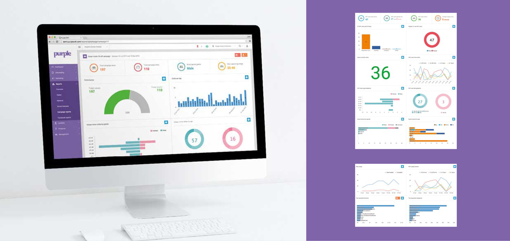

---
---
<div class="purple-portal-features">
  <div class="purple-logo-header">
    
  </div>
  <h1><strong>Portal features</strong> &amp; additional services</h1>
  <div class="purple-full-width purple-mar-b">
    
  </div>
  <h2><strong>Reporting</strong> &amp; analytics</h2>
  <p>Purple’s reporting suite covers all areas of your venue’s activity and engagement including visitor based reports, network based reports, data surrounding your visitors social interests, campaign reports to give you insight into the marketing communications you create within our portal and also reports around your linked Facebook business pages.</p>
  <p>Our custom reporting palette allows you to build your own reports using existing data from your portal reports, or by overlaying third party data from connected data sources.</p>
  <p>Reporting is available in real-time via our cloud-based system, 24/7, 365. You can view reports online, export them as PDFs or download data in CSV format. Our API functionality means you can also sync the data with your own CRM or external data platform.</p>
</div>